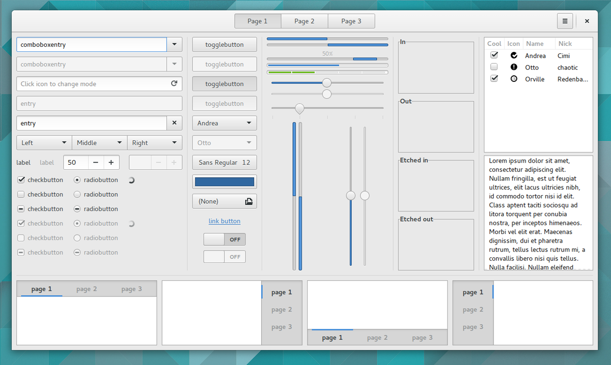

Interfaz gráfica
Rust permite la creación de interfaces gráficas mediante las APIs nativas de la plataforma anfitriona, esto gracias a que tiene características de un lenguaje de bajo nivel. Sin embargo, esta ruta de desarrollo puede llegar a generar dificultades en proyectos que planten la admision de múltiples plataformas.
Actualmente existen múltiples desarrollos para crear GUIs en Rust, algunos permiten la creación de la interfaz junto a Electron o haciendo uso de HTML, algunos otros, suministran bibliotecas nativas para el lenguaje, pero todavía se encuentran en un estado inmaduro de desarrollo. Finalmente están los proyectos que enlazan bibliotecas bastante conocidas y con una mayor madurez en su desarrollo, como GTK o Qt, lo cuales permiten desarrollos multiplataforma
Genera confianza en tu código a través de las excelentes herramientas de Rust para hacer pruebas. cargo test es la solución unificada de Rust para hacer pruebas. Escribe las pruebas junto a tu código, o en archivos separados: una solución para todas las necesidades de pruebas.
Cargo build crea binarios ajustados a cada plataforma. Con un solo comando tu código puede ser destinado a Windows, Linux, macOS, y la web. Todo es parte de una interfaz moderna, sin necesidad de archivos compilados específicos.
gtk-rs
Fue desarrollada inicialmente por Peter Mattis, Spencer Kimball y Josh MacDonald34:3 para implementar la interfaz gráfica del programa de Manipulación de Imágenes de GNU (GIMP) como reemplazo del kit de herramientas Motif; en algún momento Peter Mattis se desencantó con Motif y comenzó a escribir su propio kit de herramientas GUI llamado GIMP toolkit, reemplazando con éxito Motif para la versión 0.60 de GIMP. Finalmente, GTK fue reescrito para ser orientado a objetos y pasó a llamarse GTK+, haciéndose uso de esto por primera vez en la versión 0.99 de GIMP. Siendo la primera versión estable de GTK lanzada el 14 de abril de 1998
Esta biblioteca contenía algunas rutinas de ayuda para resolver tareas básicas de programación, como el almacenamiento de diversos datos. Estos requieren mucho tiempo para el programador, especialmente cuando se trata del desarrollo repetido de programas. Las primeras versiones de GTK incluían estructuras de datos para listas vinculadas, árboles binarios o cadenas "en crecimiento". Además, ya que fue reescrito para ser orientado a objetos, GTK permite usar este paradigma de programación dentro del lenguaje C. Estas herramientas también resultaron útiles para programas sin una interfaz gráfica de usuario y por lo tanto más tarde se trasladaron a una biblioteca separada, llamada biblioteca GLib de funciones C . El sistema orientado a objetos en la siguiente versión se relevo a la biblioteca GObject, los métodos de dibujo orientados al sistema a la biblioteca GDK (GTK + Kit de dibujo). Este último permite que GTK se ejecute de forma idéntica en plataformas en Windows, X Window System, macOS , entre otros.
Es una implementación de las bibliotecas de GTK 3 para el uso junto al lenguaje Rust. Para ello, crea funciones de Rust superpuestas a las funciones de las bibliotecas de GTK en C, haciendo uso de Foreign Function Interface que ofrece Rust.
conrod
Biblioteca de bajo nivel que hace uso de OpenGL o Vulkan.